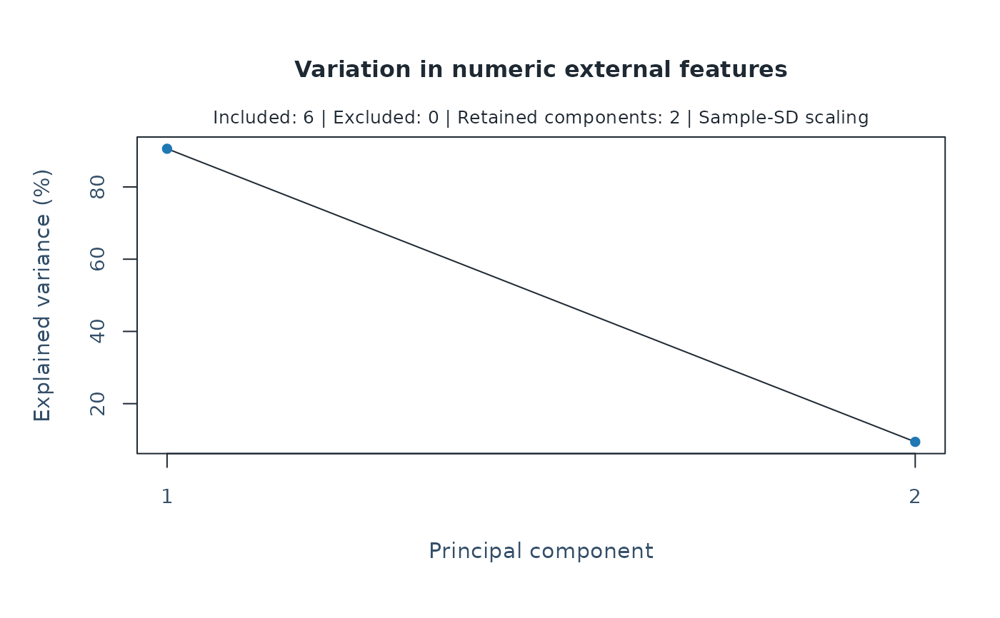
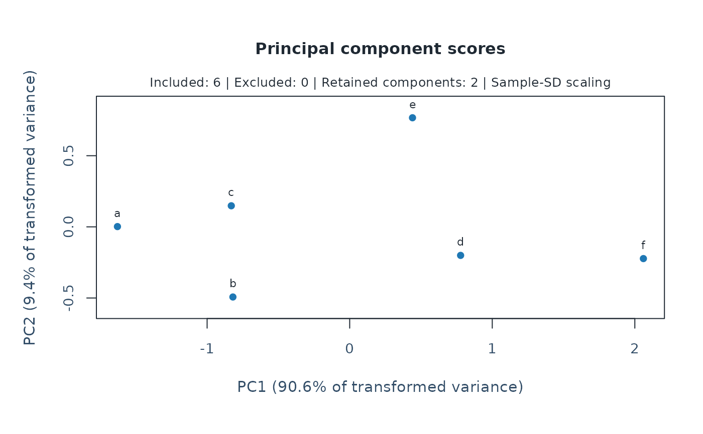
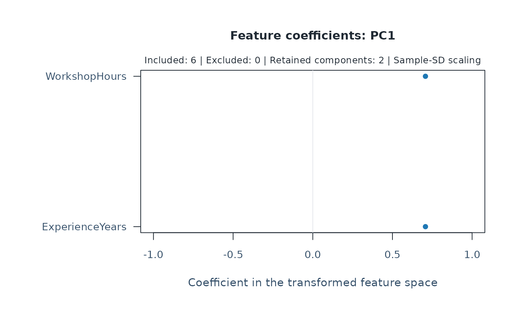

Plot numeric feature PCA and optional exploratory groups
Source:R/api-plotting-pca.R
plot.mfrm_pca.RdReview explained variation, original-feature coefficients or entity scores from a saved PCA without refitting it.
Arguments
- x
A result from
mfrm_pca().- type
"scree"(default),"scores", or"loadings".- components
For scores, two distinct retained component numbers. For loadings, one retained component number. Defaults to
c(1, 2)for scores and1for loadings. Unavailable axes cause an error.- groups
Optional
mfrm_cluster_kmeans(),mfrm_cluster_pam()ormfrm_cluster_hierarchical()result used to color a scores plot. Its IDs, included entities and shared PCA features must match. Labels only annotate the view; they do not refit PCA or imply separation on every component. Groups use both colour and point shape, including monochrome output. Shapes repeat after six groups; inspect the ID-aligned table for crowded views.- labels
Whether to display entity IDs on silhouettes or heatmaps. The default displays them for at most 50 entities. No entities are sampled when labels are hidden. Profile plots always label groups and levels.
- draw
Draw the plot when
TRUE;FALSEonly returns plotted values.- preset
Plot style:
"standard","publication","compact", or"monochrome".- ...
Reserved for future use; additional arguments are rejected.
Value
Invisibly, an mfrm_plot_data object with the exact plotted table,
selected components, group colour/shape encoding, excluded IDs and axis meanings. Scree data retain the
full variance table, including components not used for clustering.
plot_data() extracts these values. Automatic as_ggplot() conversion
is unavailable; the extracted table supports custom graphics.
Details
Scores and loading signs are arbitrary. Loadings are eigenvector coefficients in the centered, weighted and optionally standardized space; they are not original-unit correlations. A two-component scores view omits other directions, so apparent overlap or separation is only a projection. No confidence region, group validity or rater-quality judgment is implied.
Examples
attributes <- data.frame(ID = letters[1:6],
ExperienceYears = c(1, 2, 4, 8, 10, 12),
WorkshopHours = c(8, 16, 12, 24, 16, 32))
result <- mfrm_pca(mfrm_features(attributes, "ID", names(attributes)[-1]))
plot(result)

plot(result, type = "scores")

plot(result, type = "loadings", components = 1)

plot_data(plot(result, type = "scores", draw = FALSE))$table
#> ID PC1 PC2 Cluster
#> 1 a -1.6289491 0.001871076 NA
#> 2 b -0.8191619 -0.492997833 NA
#> 3 c -0.8304076 0.148084532 NA
#> 4 d 0.7779212 -0.200570920 NA
#> 5 e 0.4405114 0.766675482 NA
#> 6 f 2.0600859 -0.223062336 NA